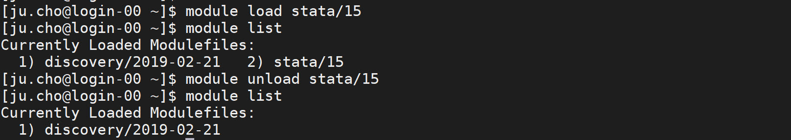

Using Module
The module system on Discovery includes many commonly used scientific software packages that you can load in your path when you need it and unload it when you no longer need it.
Use the module avail command to show a list of the most currently available software on Discovery.
Note
Some modules might conflict with each other, resulting in the software not behaving as expected.
Also, if there are multiple versions of software, and you load more than one version of the software,
only the latest version will be used. Use module list to view the modules you currently have loaded in your path.
Tip
Use the which command to display which version of a software package you have in your path.
For example, which python will display the version of python that you have in your path.
Module commands
The following are common module commands that are useful for interacting with software packages on Discovery.
Module Command |
Function |
|---|---|
|
View a list of all of the available software packages on Discovery that you can load |
|
Displays a list of the software packages currently loaded in your path |
|
View the details of a software package (see the section “Module Show” below for more information) |
|
Load a software package into your environment |
|
Remove a single software package from your environment |
|
Removes all of the loaded software packages from your environment. |
Caution
Using module purge will purge all modules from your environment, including the default module discovery/2019-02-21.
This module contains the http proxy needed for nodes to have internet access.
If you accidentally purge this module, it will be automatically reloaded the next time you log out and
log back in again. You can also load it manually if you have purged it by using the module load command.
Module show example
Before loading a module, type module show <name of module> to see if there are any dependencies or commands that you need to execute
before loading the module. In some cases, a module might depend on having other modules loaded to work as expected. While modules are a convenient
way of loading software to use on Discovery, scientific software can come with many packages and dependencies. In addition to module, you should review
other ways of loading software on Discovery. See Software overview for more information on different ways you can install software on Discovery.
The figure below shows an example of module show with the software package called amber.
Module load and unload example
In the figure below, the software module stata/15 was loaded and then unloaded. After loading and unloading, module list was used to check that the STATA was loaded and unloaded.
Using software applications with X11 Forwarding
If you are attempting to open a GUI-based software application that uses X11 forwarding to display, such as MATLAB or Maestro, and
you get an error such as Error: unable to open display localhost:19.0, this is most likely due to an issue with passwordless SSH.
See Using X11 for tips and troubleshooting information opening applications that use X11 forwarding.